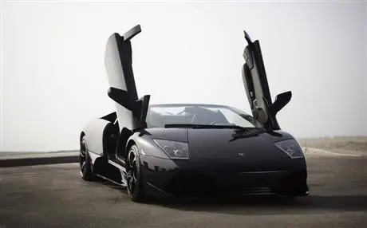

este es un trabajo de investigación para la asignatura de TIC
El nombre "Murciélago" procede del nombre de un toro de la ganadería Pérez de Laborda, que por su bravura y entrega ante el torero Rafael Molina "Lagartijo" fue indultado en 1879 y fue comprado por Antonio Miura para ser usado como semental

Tiene un motor V12 a 60º de 6192 cm³ (6,2 L; 377,9 plg³), que alcanza una potencia máxima de 580 CV (572 HP; 427 kW) a las 7500 rpm y un par máximo de 650 N·m (479 lb·pie) a las 5400 rpm. Gracias a esto, es capaz de llegar a los 333 km/h (207 mph) de velocidad máxima y acelerar de 0 a 100 km/h (62 mph) en 3,8 segundos. Como lo viene haciendo la marca desde hace 30 años, el motor está situado en posición central-trasera longitudinal con la transmisión ubicada al frente, la cual le otorga al vehículo una buena distribución de pesos: 58 % atrás y 42 % delante, confiriéndole mejor tracción, agarre y frenada